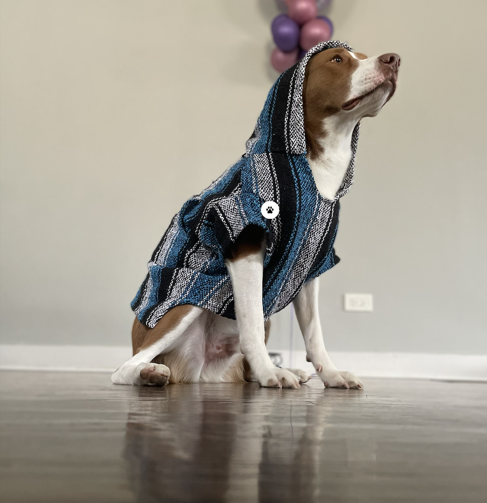

In this course students examine core web technologies that are integral in the creation of web-based applications typically delivered in a browser. The course will cover fundamental web protocols, web application architectures, markup, and scripting languages. A focus will be placed on writing modern, standards-compliant JavaScript and how it is used to interact with HTML and CSS to enable rich user interfaces and communication with other services. Current frameworks, libraries, and tools will also be explored
Hello! My name is Bridget Torres !
My web experience started in high school when I took a web development class in which we were tasked to create web pages such as a website with our favorite recipes.
As of right now, I'm pursuing my Bachelor of Computer Science at IIT. Among my passions, I am particularly interested in everything that has to do with technology and design. Overall I enjoy using new technologies as well as expanding my range of expertise in new frameworks.
I have a dog named Goku!
